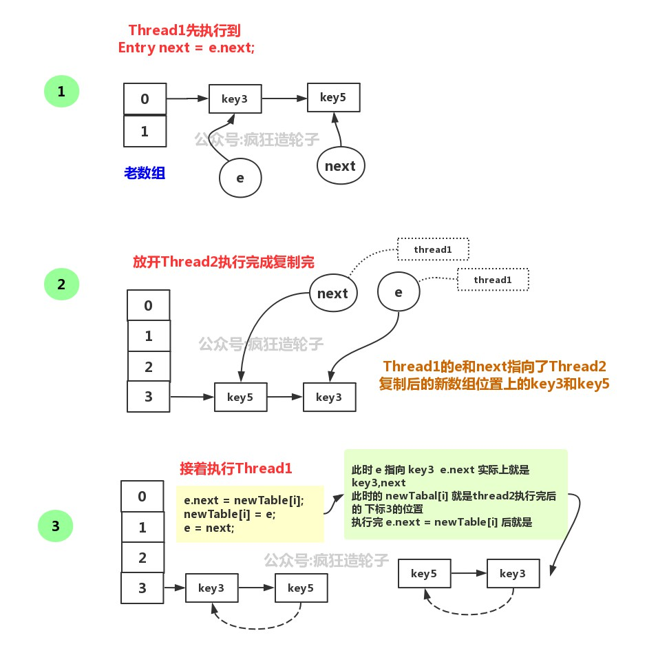

原文连接:https://www.cnblogs.com/NiceCui/p/11929328.html
本文的源码基于jdk8版本,讲一下hashMap的核心基本和重难点知识
概述
- hashMap的数据结构是 数组+链表+红黑树
- 数组查找速度快 链表插入和删除速度比较快
- 链表什么时候变成变成红黑树
- HashMap就是使用哈希表来存储的。哈希表为解决冲突，可以采用开放地址法和链地址法等来解决问题，Java中HashMap采用了链地址法。链地址法，简单来说，就是数组加链表的结合
- 节点数大于等于8，并且容量大于64才会把单向链表转换成红黑树
- 为了优化查找性能, 链表转变成红黑树, 以将 o(n)复杂度的查找效率提升至o(log n)
// 1. 如果链表长度大于等于8
if (binCount >= TREEIFY_THRESHOLD - 1) {
treeifyBin(tab, hash);
break;
}
final void treeifyBin(Node<K,V>[] tab, int hash) {
int n, index; Node<K,V> e;
// 2. 如果容量小于64 进行扩容操作
if (tab == null || (n = tab.length) < MIN_TREEIFY_CAPACITY)
resize();
else if ((e = tab[index = (n - 1) & hash]) != null) {
TreeNode<K,V> hd = null, tl = null;我们知道当容量比较小hash的碰撞率也是比较高的，这个代码中 链表长度已经到达8还要去判断容量大小是否小于64，
如果小于64通过扩容重新给每个key计算和分配到新的数组的位置效率还是比较高的，当容量小于64的时候默认就是16，元素数量会小于 < 16*0.75,数据量非常小，扩容的效率还是非常可观的， 相对于转化成红黑树会更好，
通过扩容原先碰撞在一起组成链表的key会大概率被分散开，因为容量发生变化 hash & (n-1) 的值也会跟着变总结就是当hashMap容量小于64时候，是不会出现红黑树的，也就是只有容量大于64，且链表长度大于8才会转换成红黑树
一、构造函数
如果我们HashMap在构造时赋一个初始容量，不管你的数值是不是2的次幂,hashMap都会自动将table设为2的整数次幂，接下来我们看看hashMap的构造函数
public class HashMap<K,V> extends AbstractMap<K,V> implements Map<K,V>, Cloneable, Serializable {
// 默认初始大小 16
static final int DEFAULT_INITIAL_CAPACITY = 1 << 4; // aka 16
// 默认负载因子 0.75
static final float DEFAULT_LOAD_FACTOR = 0.75f;
final float loadFactor;
/**
* The next size value at which to resize (capacity * load factor).
*
* @serial
*/
// (The javadoc description is true upon serialization.
// Additionally, if the table array has not been allocated, this
// field holds the initial array capacity, or zero signifying
// DEFAULT_INITIAL_CAPACITY.)
int threshold;
transient Node<K,V>[] table;
// 没有指定时, 使用默认值
// 即默认初始大小16, 默认负载因子 0.75
public HashMap() {
this.loadFactor = DEFAULT_LOAD_FACTOR; // all other fields defaulted
}
// 指定初始大小, 但使用默认负载因子
// 注意这里其实是调用了另一个构造函数
public HashMap(int initialCapacity) {
this(initialCapacity, DEFAULT_LOAD_FACTOR);
}
// 指定初始大小和负载因子
public HashMap(int initialCapacity, float loadFactor) {
if (initialCapacity < 0)
throw new IllegalArgumentException("Illegal initial capacity: " +
initialCapacity);
if (initialCapacity > MAXIMUM_CAPACITY)
initialCapacity = MAXIMUM_CAPACITY;
if (loadFactor <= 0 || Float.isNaN(loadFactor))
throw new IllegalArgumentException("Illegal load factor: " +
loadFactor);
this.loadFactor = loadFactor;
this.threshold = tableSizeFor(initialCapacity);
}
// 利用已经存在的map创建HashMap
public HashMap(Map<? extends K, ? extends V> m) {
this.loadFactor = DEFAULT_LOAD_FACTOR;
putMapEntries(m, false);
}
}
- 我们在构造函数中指定了initialCapacity, 这个值也只被用来计算 threshold
this.threshold = tableSizeFor(initialCapacity);- tableSizeFor函数干了什么？
/**
* Returns a power of two size for the given target capacity.
*/
static final int tableSizeFor(int cap) {
int n = cap - 1;
n |= n >>> 1;
n |= n >>> 2;
n |= n >>> 4;
n |= n >>> 8;
n |= n >>> 16;
return (n < 0) ? 1 : (n >= MAXIMUM_CAPACITY) ? MAXIMUM_CAPACITY : n + 1;
}tableSizeFor这个方法用于找到大于等于initialCapacity的最小的2的幂, 这个算法还是很精妙的,
我们都知道, 当一个32位整数不为0时, 32bit中至少有一个位置为1, 上面5个移位操作的目的在于, 将 从最高位的1开始, 一直到最低位的所有bit 全部设为1, 最后再加1(注意, 一开始是先cap-1的), 则得到的数就是大于等于initialCapacity的最小的2的幂
最后我们来看最后一个构造函数, 它调用了 putMapEntries 方法:
final void putMapEntries(Map<? extends K, ? extends V> m, boolean evict) {
int s = m.size();
if (s > 0) {
if (table == null) { // pre-size
float ft = ((float)s / loadFactor) + 1.0F;
int t = ((ft < (float)MAXIMUM_CAPACITY) ?
(int)ft : MAXIMUM_CAPACITY);
if (t > threshold)
threshold = tableSizeFor(t);
}
else if (s > threshold)
resize();
for (Map.Entry<? extends K, ? extends V> e : m.entrySet()) {
K key = e.getKey();
V value = e.getValue();
putVal(hash(key), key, value, false, evict);
}
}
}我们知道, 当使用构造函数HashMap(Map<? extends K, ? extends V> m) 时, 我们并没有为 table 赋值, 所以, table值一定为null, 我们先根据传入Map的大小计算 threshold 值, 然后判断需不需要扩容, 最后调用 putVal方法将传入的Map插入table中.
- 通过上面对四个构造函数的分析我们发现, 除了最后一个构造函数, 其他三个函数:
HashMap()
HashMap(int initialCapacity)
HashMap(int initialCapacity, float loadFactor)- 这说明HashMap中, table的初始化或者使用不是在构造函数中进行的, 而是在实际用到的时候, 事实上, 它是在HashMap扩容的时候实现的, 即resize函数（下面会细讲）
二、put操作
1. hash函数
static final int hash(Object key) {
int h;
return (key == null) ? 0 : (h = key.hashCode()) ^ (h >>> 16);
}key的hashCode是一个int类型的数值，长度32位，将hashCode右移16位，然后把int数值的高16位和低16位进行异或操作(相应位上的数字不相同时，该位才取1，若相同，即为0)，这样可以有效避免高16位不同，但是低16位相同的key的hash碰撞
2. 数组下标计算
i = (n - 1) & hash
&运算代替%运算,主要是为了提升运算效率，这样hashMap的长度必须是2的n次方这样才能满足 hash % 2^n = hash & (2^n - 1),这也是hashMap长度必须是2的n次方的原因
3. 操作步骤
判断键值对数组table[i]是否为空或为null，否则执行resize()进行扩容；
根据键值key计算hash值得到插入的数组索引i，如果table[i]==null，直接新建节点添加，转向⑥，如果table[i]不为空，转向③；
判断table[i]的首个元素是否和key一样，如果相同直接覆盖value，否则转向④，这里的相同指的是hashCode以及equals；
判断table[i] 是否为treeNode，即table[i] 是否是红黑树，如果是红黑树，则直接在树中插入键值对，否则转向⑤；
遍历table[i]，判断链表长度是否大于8，大于8的话把链表转换为红黑树(还要判断当前数组容量)，在红黑树中执行插入操作，否则进行链表的插入操作；遍历过程中若发现key已经存在直接覆盖value即可；
插入成功后，判断实际存在的键值对数量size是否超多了最大容量threshold，如果超过，进行扩容。
final V putVal(int hash, K key, V value, boolean onlyIfAbsent, boolean evict) {
Node<K,V>[] tab; Node<K,V> p; int n, i;
// 首先判断table是否是空的
// 我们知道, HashMap的三个构造函数中, 都不会初始Table, 因此第一次put值时, table一定是空的, 需要初始化
// table的初始化用到了resize函数, 这个我们上一篇文章已经讲过了
// 由此可见table的初始化是延迟到put操作中的
if ((tab = table) == null || (n = tab.length) == 0)
n = (tab = resize()).length;
// 这里利用 `(n-1) & hash` 方法计算 key 所对应的下标
// 如果key所对应的桶里面没有值, 我们就新建一个Node放入桶里面
if ((p = tab[i = (n - 1) & hash]) == null)
tab[i] = newNode(hash, key, value, null);
// 到这里说明目标位置桶里已经有东西了
else {
Node<K,V> e; K k;
// 这里先判断当前待存储的key值和已经存在的key值是否相等
// key值相等必须满足两个条件
// 1. hash值相同
// 2. 两者 `==` 或者 `equals` 等
if (p.hash == hash && ((k = p.key) == key || (key != null && key.equals(k))))
e = p; // key已经存在的情况下, e保存原有的键值对
// 到这里说明要保存的桶已经被占用, 且被占用的位置存放的key与待存储的key值不一致
// 前面已经说过, 当链表长度超过8时, 会用红黑树存储, 这里就是判断存储桶中放的是链表还是红黑树
else if (p instanceof TreeNode)
// 红黑树的部分以后有机会再说吧
e = ((TreeNode<K,V>)p).putTreeVal(this, tab, hash, key, value);
//到这里说明是链表存储, 我们需要顺序遍历链表
else {
for (int binCount = 0; ; ++binCount) {
// 如果已经找到了链表的尾节点了,还没有找到目标key, 则说明目标key不存在，那我们就新建一个节点, 把它接在尾节点的后面
if ((e = p.next) == null) {
p.next = newNode(hash, key, value, null);
// 如果链表的长度达到了8个, 就将链表转换成红黑数以提升查找性能
if (binCount >= TREEIFY_THRESHOLD - 1) // -1 for 1st
treeifyBin(tab, hash);
break;
}
// 如果在链表中找到了目标key则直接退出
// 退出时e保存的是目标key的键值对
if (e.hash == hash &&
((k = e.key) == key || (key != null && key.equals(k))))
break;
p = e;
}
}
// 到这里说明要么待存储的key存在, e保存已经存在的值
// 要么待存储的key不存在, 则已经新建了Node将key值插入, e的值为Null
// 如果待存储的key值已经存在
if (e != null) { // existing mapping for key
V oldValue = e.value;
// 前面已经解释过, onlyIfAbsent的意思
// 这里是说旧值存在或者旧值为null的情况下, 用新值覆盖旧值
if (!onlyIfAbsent || oldValue == null)
e.value = value;
afterNodeAccess(e); //这个函数只在LinkedHashMap中用到, 这里是空函数
// 返回旧值
return oldValue;
}
}
// 到这里说明table中不存在待存储的key, 并且我们已经将新的key插入进数组了
++modCount; // 这个暂时用不到
// 因为又插入了新值, 所以我们得把数组大小加1, 并判断是否需要重新扩容
if (++size > threshold)
resize();
afterNodeInsertion(evict); //这个函数只在LinkedHashMap中用到, 这里是空函数
return null;
}总结
- 在put之前会检查table是否为空，说明table真正的初始化并不是发生在构造函数中， 而是发生在第一次put的时候。
- 查找当前key是否存在的条件是p.hash == hash && ((k = p.key) == key || (key != null && key.equals(k)))
- 如果插入的key值不存在，则值会插入到链表的末尾。
- 每次插入操作结束后，都会检查当前table节点数是否大于threshold, 若超过，则扩容。
- 当链表长度超过TREEIFY_THRESHOLD（默认是8）个时，会将链表转换成红黑树以提升查找性能。
- 在调用resize方法进行初始化或是扩容操作时，当数组下面的链表长度不超过6时，(此时是红黑书)就会将链表由红黑树转为链表 UNTREEIFY_THRESHOLD = 6
三、扩容操作 resize
jdk1.8的扩容操作
- 加载因子0.75，为什么？
- 太小hash碰撞就会变高，查询效率就会降低，太大就会浪费空间，这是在空间和查询效率上折合出来的
- 什么时候扩容？扩容要进行哪些操作？
- resize发生在table初始化, 或者table中的节点数超过threshold值的时候, threshold的值一般为负载因子乘以容量大小.
- 容量大小为什么是 2的n次幂
- 当只有容量是2的n次幂 才会满足 hashCode & (length - 1) = hashCode % length
- 每次扩容增加多少？
- 每次扩容的大小是当前容量的2倍
- 每次扩容都会新建一个table, 新建的table的大小为原大小的2倍.
- 扩容时,会将原table中的节点re-hash到新的table中, 但节点在新旧table中的位置存在一定联系: 要么下标相同, 要么相差一个oldCap(原table的大小)
jdk1.8对扩容做了很多优化，当然源码内容比较多就不都贴出来，可以自行查看
jdk1.8的resize()方法主要分为两部分：
- 扩容，扩大数组容量和计算临界值threshold
- 数据搬家（如果数组数据不为空，需要把数据从原数组搬到扩容后的新数组）
扩容部分这里不细说了，主要说一下数据搬家这部分源码：
// 下面这段就是把原来table里面的值全部搬到新的table里面
if (oldTab != null) {
for (int j = 0; j < oldCap; ++j) {
Node<K,V> e;
if ((e = oldTab[j]) != null) {
// 这里注意, table中存放的只是Node的引用, 这里将oldTab[j]=null只是清除旧表的引用, 但是真正的node节点还在, 只是现在由e指向它
oldTab[j] = null;
// 如果该存储桶里面只有一个bin, 就直接将它放到新表的目标位置
if (e.next == null)
newTab[e.hash & (newCap - 1)] = e;
// 如果该存储桶里面存的是红黑树, 则拆分树
else if (e instanceof TreeNode)
//红黑树的部分以后有机会再讲吧
((TreeNode<K,V>)e).split(this, newTab, j, oldCap);
// 下面这段代码很精妙, 我们单独分一段详细来讲
else { // preserve order
Node<K,V> loHead = null, loTail = null;
Node<K,V> hiHead = null, hiTail = null;
Node<K,V> next;
do {
next = e.next;
if ((e.hash & oldCap) == 0) {
if (loTail == null)
loHead = e;
else
loTail.next = e;
loTail = e;
}
else {
if (hiTail == null)
hiHead = e;
else
hiTail.next = e;
hiTail = e;
}
} while ((e = next) != null);
if (loTail != null) {
loTail.next = null;
newTab[j] = loHead;
}
if (hiTail != null) {
hiTail.next = null;
newTab[j + oldCap] = hiHead;
}
}
}
}
}数据搬家的时候分为三种情况：数组节点只有一个数据、是红黑树、是链表
我们都知道jdk1.7的扩容的链表操作是有问题的，我们来看看jdk1.8的链表数据操作的巧妙之处
Node<K,V> loHead = null, loTail = null;
Node<K,V> hiHead = null, hiTail = null;
Node<K,V> next;
do {
next = e.next;
if ((e.hash & oldCap) == 0) {
if (loTail == null)
loHead = e;
else
loTail.next = e;
loTail = e;
}
else {
if (hiTail == null)
hiHead = e;
else
hiTail.next = e;
hiTail = e;
}
} while ((e = next) != null);
if (loTail != null) {
loTail.next = null;
newTab[j] = loHead;
}
if (hiTail != null) {
hiTail.next = null;
newTab[j + oldCap] = hiHead;
}第一段
Node<K,V> loHead = null, loTail = null;
Node<K,V> hiHead = null, hiTail = null;上面这段定义了四个Node的引用, 从变量命名上,我们初步猜测, 这里定义了两个链表, 我们把它称为
lo链表和hi链表,loHead和loTail分别指向lo链表的头节点和尾节点,hiHead和hiTail以此类推.
第二段
if ((e.hash & oldCap) == 0) {
if (loTail == null)
loHead = e;
else
loTail.next = e;
loTail = e;
}
else {
if (hiTail == null)
hiHead = e;
else
hiTail.next = e;
hiTail = e;
}上面这段是一个do-while循环, 我们先从中提取出主要框架:
do {
next = e.next;
...
} while ((e = next) != null);从上面的框架上来看, 就是在按顺序遍历该存储桶位置上的链表中的节点.
我们再看if-else 语句的内容:
// 插入lo链表
if (loTail == null)
loHead = e;
else
loTail.next = e;
loTail = e;
// 插入hi链表
if (hiTail == null)
hiHead = e;
else
hiTail.next = e;
hiTail = e;上面结构类似的两段看上去就是一个将节点e插入链表的动作.
最后再加上 if 块, 则上面这段的目的就很清晰了:
我们首先准备了两个链表 lo 和 hi, 然后我们顺序遍历该存储桶上的链表的每个节点, 如果 (e.hash & oldCap) == 0, 我们就将节点放入lo链表, 否则, 放入hi链表.
第三段
if (loTail != null) {
loTail.next = null;
newTab[j] = loHead;
}
if (hiTail != null) {
hiTail.next = null;
newTab[j + oldCap] = hiHead;
}- 如果lo链表非空, 我们就把整个lo链表放到新table的j位置上
- 如果hi链表非空, 我们就把整个hi链表放到新table的j+oldCap位置上
通过上面的剖析我们可以看出，这段代码的意义就是将原来的链表拆分成两个链表, 并将这两个链表分别放到新的table的 j 位置和 j+oldCap 上, j位置就是原链表在原table中的位置, 拆分的标准就是:
(e.hash & oldCap) == 0关于 (e.hash & oldCap) == 0 j 以及 j+oldCap 设计的非常巧妙，省去了重新计算下标的过程，提升了效率，
那我们就有疑惑 为什么原来元素的 hash 和 原数组容量 进行 & 操作就能知道在新数组的位置呢
首先我们要明确三点：
- 数组容量都是 2的整数次幂 （2^n）
- 新数组newCap是原来oldCap的2倍 （2^n+1）
- 下标计算
hash & (n - 1)其实就是取hash的低m位
我们假设 oldCap = 16
n-1 = 16 -1 = 15二进制数据就是0000 0000 0000 0000 0000 0000 0000 1111oldCap = 16二进制数据就是0000 0000 0000 0000 0000 0000 0001 0000
那 (16-1) & hash 自然就是取hash值的低4位,因为其他位置都是0 我们假设它为 abcd
将oldCap扩大两倍后, 新的index的位置就变成了 (32-1) & hash, 其实就是取 hash值的低5位
- (32-1)的二进制数据是
0000 0000 0000 0000 0000 0000 0001 1111
一个node的hash值取低5位的情况有两种
0abcd
1abcd这里要注意看了
如果hash 值的二进制数据的第4位（起始位置0）为0 那 这个hash & (16-1) 和 hash & (32-1) 计算的下标是一样的
而且
1abcd = 0abcd + 10000
这里的 0abcd和原来 hash & (16-1) 计算的下标值 10000 正好是 oldCap的二进制的低位 所以 1abcd = 0abcd + 10000 = j + oldCap
得出这样的结论之后 我们就可以根据 2^n 的第n位是否是1去判断这个数据的下标,oldCap的正好是第n位有值其他位都是0，
这样 我们用：
hash & oldCap- 如果 (e.hash & oldCap) == 0 则该节点在新表的下标位置与旧表一致都为 j
- (e.hash & oldCap) != 0 则该节点在新表的下标位置与旧表一致都为 j+oldCap
如何避免并发问题导致链表转移行程环
do {
next = e.next;
if ((e.hash & oldCap) == 0) {
if (loTail == null)
loHead = e;
else
loTail.next = e;
loTail = e;
}
else {
if (hiTail == null)
hiHead = e;
else
hiTail.next = e;
hiTail = e;
}
} while ((e = next) != null);- 首先链表的操作过程都是局部变量，在链表的位置重新计算完成之前 新数组对象不参与，这样就规避了多线程操作公共变量，只有完成之后赋值给新数组，这样即便并发只是多赋值几次不会因为多线程操作造成数据其他影响
- 同样也没有像jdk1.7头插法导致的链表转移后的倒序问题
jdk1.7 扩容并发问题分析
- jdk1.7扩容复制链表数据从老数组到新数组过程中使用的时头插法，这种方式在并发环境下会让链表行程一个环，导致在转移数据或者get这个hash桶数据时出现死循环
- 就是下面这段代码导致的这个问题
void transfer(Entry[] newTable, boolean rehash) {
int newCapacity = newTable.length;
for (Entry<K,V> e : table) {
while(null != e) {
Entry<K,V> next = e.next;
if (rehash) {
e.hash = null == e.key ? 0 : hash(e.key);
}
int i = indexFor(e.hash, newCapacity);
e.next = newTable[i];
newTable[i] = e;
e = next;
}
}
}- 为了模拟这个代码问题 我们写了个demo
// 首先我们修改一下这个代码 我们把通过hash计算位置改成了一个默认位置，故意制造hash冲突
void transfer(Entry[] newTable, boolean rehash) {
int newCapacity = newTable.length;
for (Entry e : table) {
while (null != e) {
Entry next = e.next;
if (rehash) {
e.hash = null == e.key ? 0 : hash(e.key);
}
// 指定下标位置
// int i = indexFor(e.hash, newCapacity);
int i = 3;
e.next = newTable[i];
newTable[i] = e;
e = next;
}
}
}- 然后我们模拟多线程环境下resize过程中调用transfer这个方法
Entry[] table = new Entry[2];
Entry[] newTable = new Entry[5];
/**
* 模拟JDK7 hashMap复制链表到新数组逻辑测试
*
* @throws Exception
*/
@Test
public void testTransfer() throws Exception {
Entry entry2 = new Entry(2, "5", "B", null);
Entry entry1 = new Entry(2, "3", "A", entry2);
table[0] = entry1;
CountDownLatch countDownLatch = new CountDownLatch(2);
new Thread(new Runnable() {
@Override
public void run() {
transfer(newTable, false);
countDownLatch.countDown();
}
}, "Thread1").start();
new Thread(new Runnable() {
@Override
public void run() {
transfer(newTable, false);
countDownLatch.countDown();
}
}, "Thread2").start();
countDownLatch.await();
Entry entry = newTable[3];
while (null != entry) {
System.out.println("key:" + entry.key);
entry = entry.next;
}
TimeUnit.HOURS.sleep(1);
}
- 当然我们为了更直观jdk1.7转移链表逻辑问题，写死了插入的数组位置，默认插入新数组的下标3的位置

- 无论是jdk1.8的hashMap还是1.7的hashMap 都是线程安全的
五、红黑树
红黑树特性
- 每个节点要么是红色，要么是黑色；
- 根节点永远是黑色的；
- 所有的叶节点都是是黑色的（注意这里说叶子节点其实是上图中的 NIL 节点，java中的空节点 null）；
- 每个红色节点的两个子节点一定都是黑色；
- 从任一节点到其子树中每个叶子节点的路径都包含相同数量的黑色节点；
红黑树的基本增删查操作，包括求最大最小值，其时间复杂度最坏为O(lgn)
左旋和右旋
左旋
x父节点，y子节点，左旋就是把x变成y的左子节点，y成为x父节点
右旋
y父节点，x子节点，右旋就是把y变成x的右子节点，x成为y的父节点
红黑树和平衡二叉树对比
红黑树的查询性能略微逊色于AVL树，因为他比avl树会稍微不平衡最多一层，也就是说红黑树的查询性能只比相同内容的avl树最多多一次比较，但是，红黑树在插入和删除上完爆avl树，avl树每次插入删除会进行大量的平衡度计算，而红黑树为了维持红黑性质所做的红黑变换和旋转的开销，相较于avl树为了维持平衡的开销要小得多
总结
- HashMap：它根据键的hashCode值存储数据，大多数情况下可以直接定位到它的值，因而具有很快的访问速度，但遍历顺序却是不确定的。 HashMap最多只允许一条记录的键为null，允许多条记录的值为null。HashMap非线程安全，即任一时刻可以有多个线程同时写HashMap，可能会导致数据的不一致。如果需要满足线程安全，可以用 Collections的synchronizedMap方法使HashMap具有线程安全的能力，或者使用ConcurrentHashMap
Collections.synchronizedMap(hashMap).put("hello","疯狂造轮子");- hashMap赋值初始化大小，如果能够估算要添加的数据量 赋值
initialCapacity可以大大减少扩容带来的巨大的性能消耗 - hashMap允许一个key是null，允许多个值为null